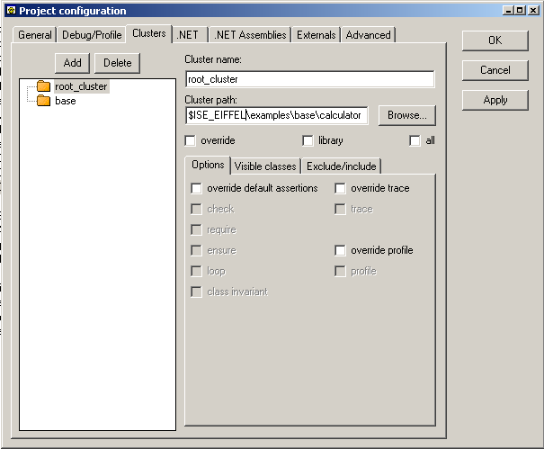

This is how you specify to the compiler where to look for compiling your classes. A cluster has a name and a path associated with it. Each cluster name in the system must be unique and only one cluster can reference a path, i.e. two clusters with different names cannot refer to the same path.
In this tab, you will have on the left hand side of the window a tree representation of the clusters list. Indeed you can specify a cluster being a child of an existing one. On the right hand side you can specify the cluster properties.
Here is how the clusters tab looks like for the calculator example:

The name of the cluster is what you will see displayed in the Cluster Tree. The path name will be used by the compiler to find the classes it needs to complete the compilation of your system.
You can also specify if the cluster is an override one. There can be only one override cluster. Each time you select one to be the override cluster, the previous override cluster if any will loose this property.
To make it easy for finding classes you can specify either the `library' or `all' option. They will both produce the same effect when looking for classes, i.e. the compiler will look at all Eiffel classes located in the specified directory and its subdirectories. The difference between this two options is that when you select `library', the classes will not be editable from the EiffelStudio environment.
The idea is that you should use `library' when reusing a library made by someone else on which you don't have control over. For example, EiffelBase is a such a library. You should use `all' for your own libraries.
This is where you can override some options that have been set for your system in either the General tab or the Debug Tab.